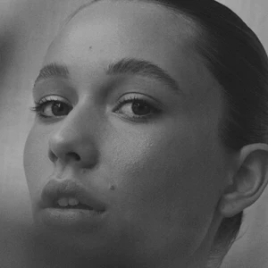

BEHANDELINGEN
Onze meest populaire behandeling. Creëer vollere en fluffy wenkbrauwen met deze behandeling. De browlift is perfect voor dunne wenkbrauwen om een vollere look te creëren, maar is ook prachtig op vollere wenkbrauwen om ze fluffy te maken. De resultaten blijven 6-8 weken.

Deze behandeling geeft uw wimpers een krul en laat ze langer lijken. Na deze behandeling is mascara gedurende ongeveer 6 weken niet nodig. Deze behandeling is perfect als je niet elke dag mascara wilt dragen, of gewoon 's ochtends tijd wilt besparen.